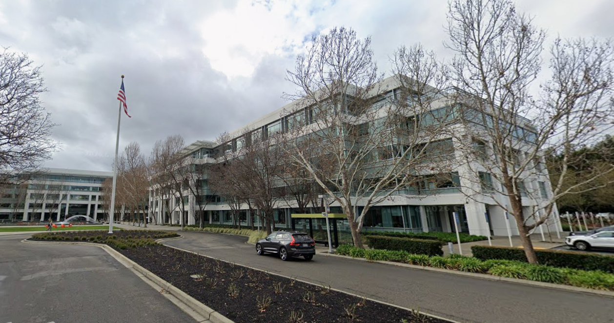
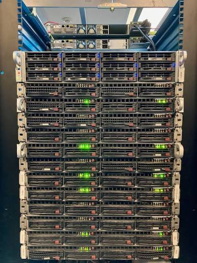
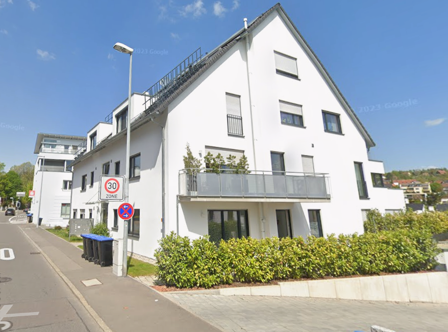
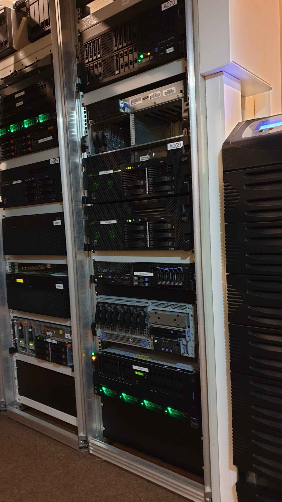

1. HTTP
www.biggestscoutevent.com is hosted at STRATO, a big german webspace provider with more than a 100.000 servers in Berlin and Karlsruhe

2. FTP
In level 1 you were on a FTP server in San Ramon near San Francisco, California. Its the data center of DriveHQ, a big cloud server provider. The exact amount os servers is unknown, but they can handle thousands of concrrent users at once.

3. Gopher
SDF (Super Dimension Fortress) is a non-profit organization to provide free public access to UNIX mashines. One of there servers in the picture hosts the JOTAJOTI-Nethunt gopherhole.

4. SSH
Freeshell.de is a private non-commercial linux project in Esslingen, Germany. To get an account you have to mail a physical paper postcard to the owner of the server.

5. IBM 5250
Since many years, everybody can gain access to an IBM i (formerly known as AS/400) in the underground "Powerbunker" in Bad Kreuznach, Germany for free.